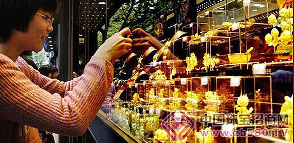

一直以来，黄金被认为是抗通胀的最好避险品种。元旦过后，黄金价格呈现持续上扬态势，在春节、情人节、元宵节连续的节日效应，以及买涨不买跌的消费心理影响下，近期各大黄金卖场和银行的黄金销售都迎来了小高峰。
春节前后，记者走访了北京地区部分银行以及黄金卖场发现，购买黄金饰品、贺岁金条等实物黄金的顾客明显增多。

在菜百商场的一个黄金饰品柜台，一位年轻女士正在挑选猴年贺岁品，她对记者表示:“我和妈妈今年都是本命年，趁着过年买个生肖吊坠，添添喜庆。”
在一家股份制银行的网点，银行的工作人员也表示“多数产品都需要预定”。他还介绍称，“在银行购买黄金饰品比金店要划算不少，并且品质更有保证。根据金饰